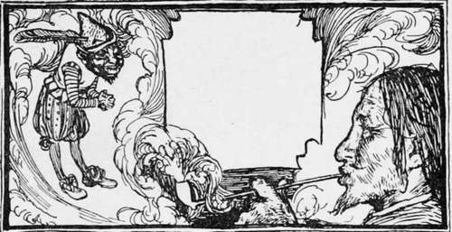

The Blue Light
Description
This section is from the book "Household Tales by Brothers Grimm", by Brothers Grimm. Also available from Amazon: Household Tales by Brothers Grimm.
The Blue Light
An old soldier had served the king his master many years, while the war lasted. But in the end peace came; the army was broken up, and honest Kurt was left without pay or reward, and sent about his business. Unluckily, his business was no business; for he had been fighting all his life, and knew no trade, and how he should get his living he did not know. However, he set out and journeyed homeward, in a very downcast mood, until one evening he came to the edge of a deep wood. As the road led that way, he pushed forward into this wood; but he had not gone far before he saw a light glimmering through the trees, towards which he bent his weary steps, and soon came to a hut, where no one lived but an old witch. Poor Kurt begged hard for a night's lodging, and something to eat and drink; but she would listen to nothing. However, he was not to be easily got rid of; and at last she said, "1 think I will take pity on you this once: but if 1 do, you must dig over all my garden for me in the morning." The soldier agreed very willingly to anything she asked: "Hungry men," he said, "must not be over-nice"; and he had nothing else to do: so on these terms he became the old witch's guest.
The next day he kept his word, and dug the garden all over very neatly. The job lasted all day; and in the evening, when his mistress would have sent him away, he said, " I am so tired with my work, that I must beg you will let me stay over the night." The old lady vowed at first she would not do any such thing; but after a great deal of talk Kurt carried his point, on the terms of chopping up a whole cart-load of wood for her the next day.
This task too was duly ended, but not till towards night; and then Kurt found himself so tired, that he begged a third night's rest: which the witch granted, but only on his pledging his word that the next day he would fetch her up the blue light that burned at the bottom of the well.
When morning came she led him to the well's mouth, tied him to a long rope, and let him down. At the bottom sure enough he found the blue light, as she had said; and he at once made a signal for her to draw him up again. But when she had pulled him up so near to the top that she could reach him with her hands, she said, " Give me the light, I will take care of it,"—meaning to play him a trick, by taking it for herself, and letting him fall down again to the bottom of the well. But Kurt was too old a soldier for that; he saw through her crafty thoughts, and said, "No, no! I shall not give you the light, till I find myself safe and sound out of the well." At this she became very angry, and though the light was what she had longed for many and many a long year, without having before found any one to go down and fetch it for her, her rage and spite so overcame her that she dashed the soldier, and his prize too, down to the bottom. There lay poor Kurt for a while in despair, on the damp mud below, and feared that his end was nigh, for how he was ever to get out he could not see. But his pipe happened to be in his pocket, still half full, and he thought to himself, " I may as well make an end of smoking you out: it is the last pleasure I shall have in this world." So he lit it at the blue light, and began to smoke.
Up rose a cloud of smoke, and on a sudden a little black dwarf, with a hump on his back and a feather in his cap, was seen making his way through the midst of it. "What do you want with me, soldier?" said he. "Nothing at all, manikin," answered he. But the dwarf said, " I am bound to serve you in everything, as lord and master of the blue light." "Then, as you are so very civil, be so good first of all as to help me out of this well! " No sooner said than done : the dwarf took him by the hand and drew him up, and the blue light of course came up with him. " Now do me another piece of kindness," said the soldier : " pray let that old lady take my place in the well!" When the dwarf had lodged the witch safely at the bottom, they began to ransack her treasures; and Kurt made bold to carry off as much of the gold and silver in her house as he well could: for he was quite sure that whose soever it had once been, he had at least as good right to it now as she had. Then the dwarf said, " If you should chance at any time to want me, you have nothing to do but to light your pipe at the blue light, and I shall soon be with you."
The soldier was not a little pleased at his good luck; and he went to the best inn in the first town he came to, and ordered some fine clothes to be made, and a handsome room to be got ready for him. When all was ready, he called the imp of the blue light to him, and said, " The king sent me off penniless, and left me to hunger and want: I have a mind to show him that it is my turn to be master now; so bring me his daughter here this evening, that she may wait upon me." "That is rather a dangerous task," said little humpty. But away he went, took the princess out of her bed, fast asleep as she was, and brought her to the soldier.
Very early in the morning he carried her back; and as soon as she saw her father she said, "I had a strange dream last night: 1 thought I was carried away through the air to an old soldier's house, and was forced to wait upon him there." Then the king wondered greatly at such a story ; but told her to make a hole in her pocket, and fill it with peas; so that if it were really as she said, and the whole was not a dream, the peas might fall out in the streets as she passed through, and thus leave a clue to tell whither she had been taken. She did so: but the dwarf had heard the king's plot; and when evening came, and the soldier said he must bring him the princess again, he strewed peas over many other streets, so that the few that fell from her pocket were not known from the others: and all that happened was, that the pigeons had a fine feast, and the people of the town were busy all the next day picking up peas, and wondering where so many could come from.
When the princess told her father what had happened to her the second time, he said, " Take one of your shoes with you, and hide it in the room you are taken to." The dwarf, however, was by his side and heard this also; and when Kurt told him to bring the king's daughter again, he said, " I have no power to save you a second time; it will be an unlucky thing for you if are found out, as I think you will." But the old soldier, like some other people who are not over-wise, would have his own way. "Then," said the dwarf, "all I can say to you is, that you had better take care, and make the best of your way out of the city gate very early in the morning."
The princess kept one shoe on, as her father bid her, and hid it in the soldier's room: and when she got back to her father, he gave orders that it should be sought for all over the town ; and at last, sure enough, it was found where she had hidden it. The soldier had meantime run away, it is true; but he had been too slow, and was followed and soon caught, and thrown into a strong prison, and loaded with chains. What was worse, he had, in the hurry of his flight, left behind him his great prize the blue light, and all his gold; and had nothing left in his pocket but one poor ducat. As his friend the dwarf belonged to the light, he was therefore lost too.
While Kurt was standing looking very sorrowfully out at the prison grating, he saw one of his old comrades going by; so calling out to him he said, "If you will bring me a little thing or two that I left in the inn, I will give you a ducat." His comrade thought this very good pay for such a job, and soon came back bringing the blue light. Then the prisoner soon lit his pipe: up rose the smoke, and with it once more came his old friend and helper in time of need, the little dwarf. " Do not fear, master! " said he; " keep up your heart at your trial, and leave everything to take its course: only mind to take the blue light with you!" The trial soon came on; the matter was sifted to the bottom; the prisoner was found guilty, and his doom passed: he was ordered to be hung forthwith on the gallows-tree.
But as he was led away to be hung, he said he had one favour to beg of the king. "What is it?" said his majesty. "That you will deign to let me smoke one pipe on the road." " Two, if you like ! " said the king, in the politest way possible. Then Kurt lit his pipe at the blue light; and the black dwarf with his hump on his back, and his feather in his cap, stood before him in a moment, and asked his master for orders. " Be so good," said Kurt, "as to send to the right-about all these good people, who are taking so much pains to fit me with a halter; and as for the king their master, be kind enough to cut him into three pieces."
Then the dwarf began to lay about him as quick as u]thought, for there was no time to lose; and he soon got si rid of the crowd around: but the king begged hard for a mercy, and, to save his life, he agreed to let Kurt have the princess for his wife, and to leave him the kingdom when he died. And so the matter was ended, and terms of peace were agreed upon, signed and sealed ; and thus peace, for the first time in his life, brought good luck to our old soldier.
Continue to:
Tags
fairy tales, children's stories, brothers grimm, household tales